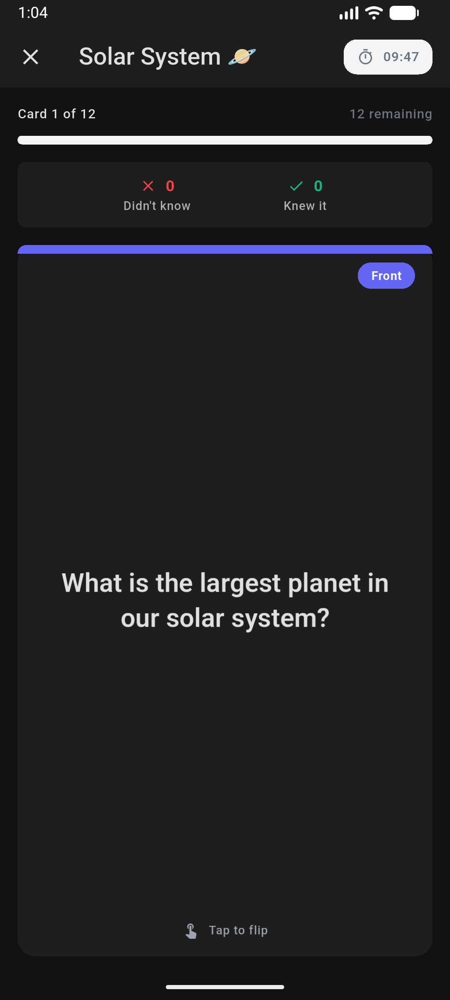
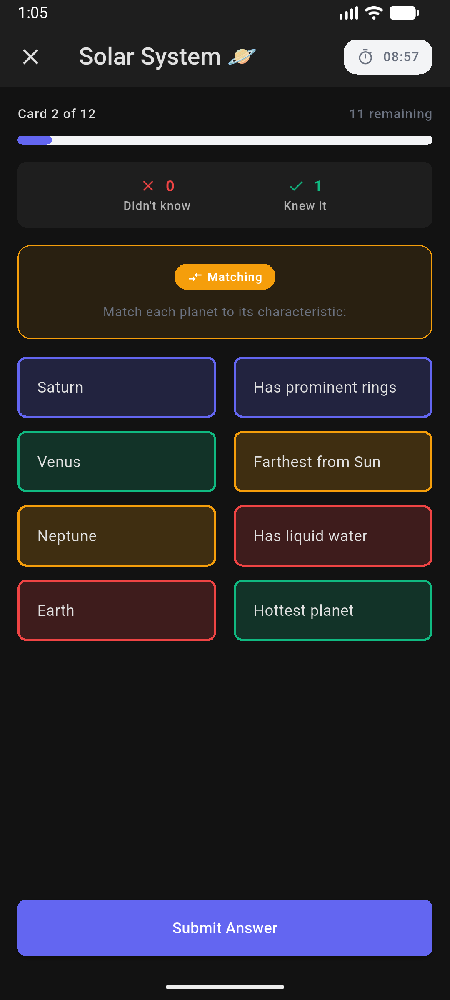
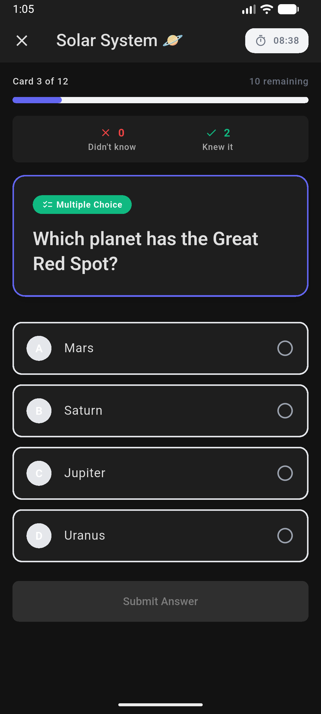
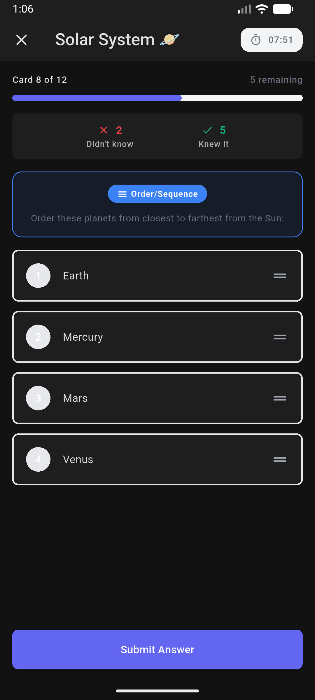
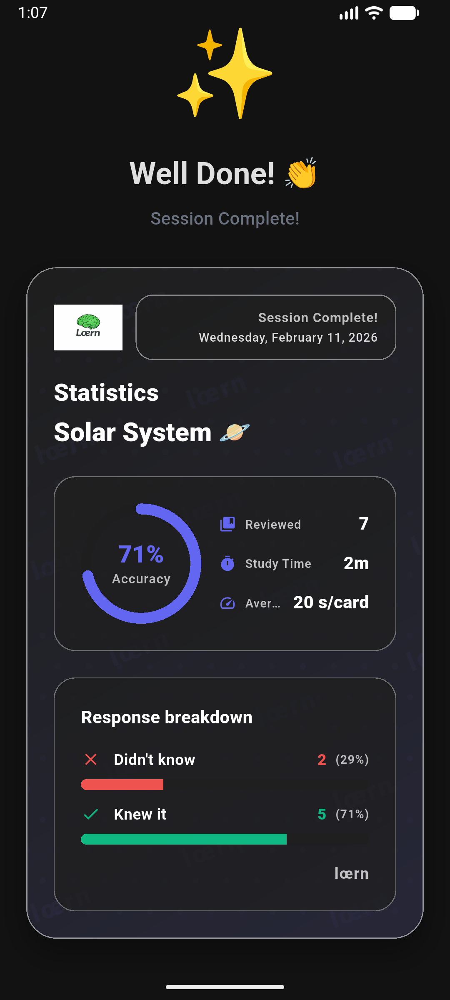

lœrn
Offline flashcards om je eigen inhoud te maken en te leren — eenvoudig, flexibel en helemaal van jou.
Geen account. Geen cloud nodig. Je leermateriaal blijft op het apparaat, tenzij je het zelf exporteert of deelt.

Leermateriaal zonder het platform eromheen
lœrn is een flashcard-app om je eigen inhoud te maken en te leren. Bouw sets voor school, studie, talen, examens of alles wat je wilt onthouden en leer vervolgens met actieve herinnering in je eigen tempo.
Jij bepaalt wat in je sets hoort en welke tools je helpen om ze te maken.
AI kan helpen. Het hoeft niet in de app te zitten.
Generatieve AI kan erg goed zijn in het omzetten van notities naar leermateriaal. lœrn houdt die dienst bewust gescheiden van de flashcard-app zelf.
Je kunt ChatGPT of een andere AI-tool naar keuze gebruiken om flashcards te genereren en dat materiaal daarna in lœrn importeren. Daardoor hoeft lœrn geen eigen AI-backend te draaien en zijn er geen terugkerende AI-servicekosten nodig.
Het praktische voordeel: gebruik AI wanneer het helpt, kies zelf de aanbieder en laat lœrn zich richten op het bewaren, organiseren en leren van je materiaal.
Waarom het nuttig is
Voor dagelijks leren
Maak sets over elk onderwerp, van examens en talen tot reizen of een persoonlijke interesse.
Voor studenten
Importeer materiaal uit je notities, leer met actieve herinnering, volg je voortgang lokaal en deel sets met anderen.
Voor docenten
Organiseer materiaal in gestructureerde sets en deel het met leerlingen via eenvoudige export.
Functies
Flashcards maken & sets organiseren
Gestructureerde sets die eenvoudig te maken, bewerken en onderhouden zijn.
Actieve herinnering & zelftests
Leermodi voor herinneren, begrijpen en herhalen.
Offline leren
Je sets en studiesessies werken lokaal, zonder dat een account nodig is.
Import & export
Haal materiaal uit notities of externe tools en exporteer sets als back-up of om te delen.
Flexibele studiesessies
Snelle herhalingen of langere sessies — jij kiest tempo en omvang.
Gebruik je eigen AI
Genereer materiaal met de AI-tool die je prettig vindt en importeer het. lœrn blijft onafhankelijk van een ingebouwde AI-dienst.
Schermafbeeldingen
Schermafbeeldingen van de huidige Android-versie.




